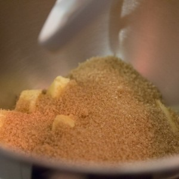
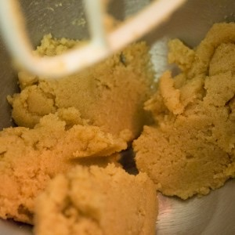
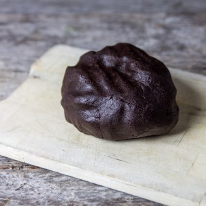
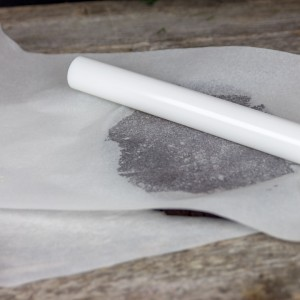
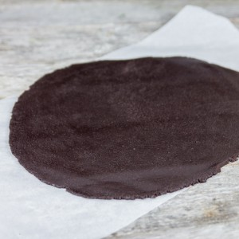
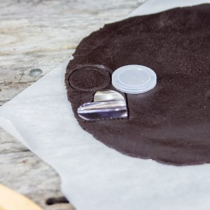
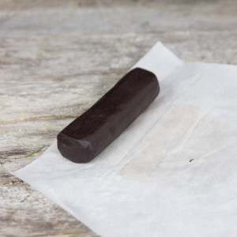

Recette des Oreo maison

Oui vous ne rêvez pas!! Aujourd’hui je vous propose la recette des Oreo maison (oui c’est possible, facile, rapide et c’est trop bon).
Pour dire vrai, je ne voulais pas publier de recettes, pas après les derniers événements qui ont frappé la France, notre pays. La cuisine est une passion, quelque chose qui se partage mais en ce moment et comme beaucoup d’entre nous j’ai la tête en vrac et le cœur en miettes éparpillées un peu partout. Pour ne pas laisser une trop grande place à cette tristesse et pour que l’optimisme et l’amour l’emportent sur ce tas d’horreurs j’ai finalement décidé de vous faire un Oreo en forme de cœur pour apaiser la vague de haine qui nous a frappé bien trop fort. Je voulais aussi faire honneur à Julia du blog « les cookines » qui organise la battle food ce mois-ci et qui nous a proposé de reprendre un produit industriel et d’en faire du 100% fait maison. J’ai donc pris mon courage à deux mains et dimanche après-midi j’ai mis tout mon amour pour réaliser la recette des Oreo maison que je voulais voir sur le blog depuis longtemps.
Pour parler un peu de la recette, je suis une dingue d’Oreo mais ça vous le savez déjà car j’en ai déjà parlé ici, ici et ici^^. Beaucoup de personnes font des Oreo maison avec une crème au chocolat blanc à l’intérieur mais non non non ce n’est clairement pas du chocolat blanc. C’est très bon mais ça ne ressemble pas suffisamment aux Oreo, aux vrais que l’on trouve dans le commerce et qui nous rendent accros! J’ai testé 1000 recettes, 1000 combinaisons inimaginables pour au final n’être jamais vraiment satisfaite (ce qui explique d’ailleurs que je ne les avais toujours pas postés sur le blog). Au final, j’ai testé la recette de Marc Grossman et je dois dire que l’on s’approche grandement de la recette des Oreo (puis cette crème avec cette petite pointe de noix de coco est juste MAGIQUE) Personnellement, je trouve les Oreo un peu trop sucrés et avec cette recette ils le sont un peu également mais ça ne m’a pas plus dérangé que ça (la prochaine je baisserai les quantités de sucre et je reviendrai sur cet article pour faire le point la-dessus).
Je vous laisse avec cette recette qui est une petite tuerie et je pense que vos enfants vont plutôt adorer (ou vous-même) 🙂 et c’est bien plus sain que les cochonneries que l’on peut trouver dans le commerce. Bref, si vous avez un petit moment devant vous (car vous verrez c’est plutôt rapide et pas trop contraignant) lancez-vous!!
Ingrédients
- Farine - 160g
- Cacao en poudre - 85g
- Levure chimique - 2 càc
- Sel - 2 pincées
- Cassonade - 350g
- Beurre ramolli - 150g
- Oeuf - 1
- Extrait de vanile - 1 càc
- Sucre glace - 125g
- Beurre doux - 30g
- Huile de noix de coco - 30g
Instructions
- Dans un bol mélanger la farine, le cacao, la levure et le sel. Réserver
- Dans un autre bol, casser l’œuf et battez-le légèrement (pour casser le jaune) et ajouter l'extrait de vanille et mélanger. Réserver
- Dans le bol de votre robot (ou dans un grand saladier), battre le beurre et le sucre brun jusqu'à obtenir une consistance crémeuse
- Ajouter en alternance le mélange farine/cacao/levure/sel et l’œuf
- Mélanger jusqu'à obtenir un mélange homogène
- Former une boule de pâte
- L'emballer dans du film alimentaire et placez-la au frigo une bonne heure
- Après le temps de repos, sortir la pâte du frigo
- Préchauffer le four à 175°
- Étalez la pâte au rouleau à pâtisserie entre deux feuilles de papier sulfurisé sur une épaisseur de 5mm à 1cm (environ^^)
- A l'aide d'un emporte-pièce découper la pâte
- Réutiliser vos chutes de pâte en les étalant puis en les découpant à nouveauPetite alternative : Si vous n'avez pas d'emporte-pièce, vous pouvez former des boudins de pâte du diamètre que vous souhaitez. Enroulez ensuite les boudins dans du papier sulfurisé, placez-les au frais à nouveau une bonne heure. A la sortie du frigo il ne vous restera plus qu'à découper la pâte de façon à faire des tranches de 5mm à 1cm puis de les déposer sur une plaque à pâtisserie (en les aplatissant plus ou moins). Avec cette manière vous n'avez pas de chutes de pâte.
- Enfourner pour 15 minutes (attention à surveiller la cuisson car selon les fours elle peut varier de quelques minutes)
- Laisser refroidir les biscuits Oreo à température ambiante
- Dans le bol de votre robot muni de la feuille, mélanger le beurre avec l'huile de coco
- Ajouter le sucre glace progressivement
- Continuer de battre jusqu'à ce que le mélange soit bien homogène et onctueux Au début le mélange peut ressembler à des grumeaux mais rassurez-vous, il prend vite la bonne consistance si vous continuez bien de battre.
- Étaler de la crème au centre de la moitié de biscuits (sur la face intérieure)
- Refermer avec l'autre face et serrer les deux parties l'une contre l'autre pour avoir la crème qui arrive jusqu'au bord
- A vous de jouer maintenant!!!!







Les tips de la communauté
Recette simple et très appréciée pour améliorer les oreos industriels. Biscuits visuellement superbes en forme de cœur. Nombreux retours positifs avec adaptations variées.
Astuces
- Recette facile à réaliser même sans robot (batteur suffit)
- L'huile de coco est indispensable pour texture et goût
- Biscuit noir obtenu avec cacao pâtissier (Nestlé ou Van Houten)
- Technique du 'boudin' très astucieuse pour gagner du temps
- Bien espacer les tranches sur papier cuisson à la cuisson
Variantes suggérées
- Remplacer l'huile de coco par huile végétale neutre (crème sera moins riche)
- Sucre vanillé possible à la place extrait vanille
- Farine complète partielle et sucre de coco partiel possible
- Lait de coco ou 'Délice de Coco' peuvent remplacer l'huile en dernier recours
- Formes variées (cœur, emporte-pièces différents)
Ajustements signalés
- Sucre en excès peut être trop - considérer réduction 100-150g selon préférence
- Texture biscuit ne ressemble pas exactement aux oreos industriels pour certains